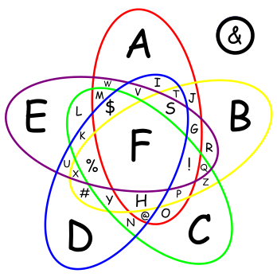

モジュール詳細：F
最高のキツネ殺戮ドローン
モジュールには文字Fがある。また、Fで始まる色の三角形が2つある。FもFで始まる色になる。色は重複する可能性がある。これらの三角形はキツネの耳として使用される。モジュールを解除するには、正しいタイミングでFを押す。下のベン図を使用して、文字と対応するルールを見つける。モジュールで使用される色は、Feldspar(長石), Fern(シダ), Firefly(蛍), Fizz(フィズ), Flame(炎), Flirt(誘惑), Forest(森林), Frost(氷結), Fuchsia(躑躅), Funk(ファンキー)である。
| 赤 | 黄 | 緑 | 青 | 紫 |
| FRKまたはFRQのインジケーターがある。 | 左耳の色は暖色系である。 | 右耳の色は寒色系である。 | Fの色には英字「E」が含まれている。 | シリアルナンバーにはF0Xのいずれかが含まれている。 |